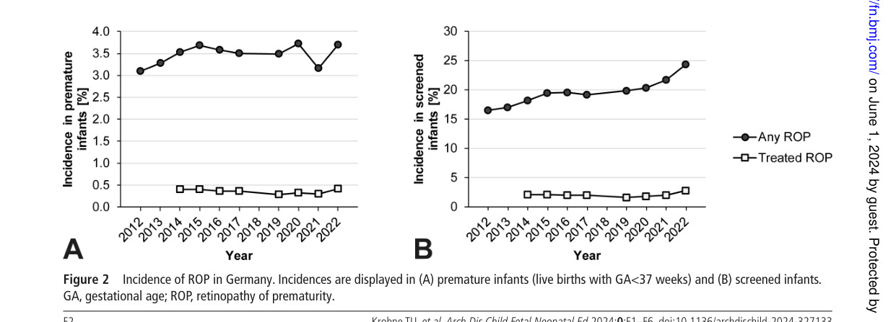

Retinopathy of prematurity (ROP) is a proliferative retinal vasculopathy affecting preterm infants in whom normal retinal vascularization is interrupted by premature birth and supplemental oxygen exposure. ROP develops in two phases: an initial hyperoxic phase in which supplemental oxygen suppresses VEGF production and arrests or ablates normal retinal vessel growth, followed by a hypoxic proliferative phase in which the metabolically active but avascular peripheral retina drives pathological neovascularization through upregulated VEGF-A and other angiogenic mediators. The disease is classified by zone (I–III, reflecting distance from the optic disc) and stage (1–5, reflecting severity from a flat demarcation line to complete retinal detachment), with plus disease (posterior vessel dilation and tortuosity) indicating active, severe disease. Key risk factors are low gestational age, low birth weight, and duration of supplemental oxygen. Treatments include laser photocoagulation and intravitreal anti-VEGF agents; severe disease (Stage 4–5) may require vitreoretinal surgery. ROP is a leading cause of preventable childhood blindness worldwide.
Ask a research question about Retinopathy of Prematurity. OpenScientist will conduct autonomous deep research using the Disorder Mechanisms Knowledge Base and PubMed literature (typically 10-30 minutes).
Do not include personal health information in your question. Questions and results are cached in your browser's local storage.
name: Retinopathy of Prematurity
creation_date: "2026-06-17T00:00:00Z"
category: Complex
description: >
Retinopathy of prematurity (ROP) is a proliferative retinal vasculopathy affecting
preterm infants in whom normal retinal vascularization is interrupted by premature
birth and supplemental oxygen exposure. ROP develops in two phases: an initial
hyperoxic phase in which supplemental oxygen suppresses VEGF production and arrests
or ablates normal retinal vessel growth, followed by a hypoxic proliferative phase in
which the metabolically active but avascular peripheral retina drives pathological
neovascularization through upregulated VEGF-A and other angiogenic mediators. The
disease is classified by zone (I–III, reflecting distance from the optic disc) and
stage (1–5, reflecting severity from a flat demarcation line to complete retinal
detachment), with plus disease (posterior vessel dilation and tortuosity) indicating
active, severe disease. Key risk factors are low gestational age, low birth weight,
and duration of supplemental oxygen. Treatments include laser photocoagulation and
intravitreal anti-VEGF agents; severe disease (Stage 4–5) may require vitreoretinal
surgery. ROP is a leading cause of preventable childhood blindness worldwide.
disease_term:
preferred_term: Retinopathy of Prematurity
term:
id: MONDO:0006952
label: retinopathy of prematurity
parents:
- Retinal Disease
- Neonatal Disorder
has_subtypes:
- name: Stage 1
display_name: ROP Stage 1 (Demarcation Line)
description: >
A flat demarcation line separating the vascularized posterior retina from the
avascular peripheral retina. The earliest clinically detectable stage; typically
resolves spontaneously without treatment.
- name: Stage 2
display_name: ROP Stage 2 (Ridge)
description: >
The demarcation line has acquired height and width, forming a ridge of
fibrovascular tissue. May show popcorn lesions. Most cases still regress
spontaneously.
- name: Stage 3
display_name: ROP Stage 3 (Extraretinal Fibrovascular Proliferation)
description: >
A ridge with extraretinal fibrovascular proliferation extending into the
vitreous. Threshold disease (five contiguous or eight cumulative clock-hours
of Stage 3 in Zone I or II with plus disease) meets the traditional criterion
for treatment. Modern guidelines using Type 1 ROP criteria indicate treatment
at Stage 3+ in Zone I or Zone II posterior.
- name: Stage 4
display_name: ROP Stage 4 (Partial Retinal Detachment)
description: >
Partial retinal detachment; subdivided into Stage 4a (extrafoveal, better
visual prognosis) and Stage 4b (foveal involvement, worse visual prognosis).
Requires surgical intervention.
- name: Stage 5
display_name: ROP Stage 5 (Total Retinal Detachment)
description: >
Total retinal detachment, usually funnel-shaped. Subdivided into Stage 5a
(open funnel anteriorly and posteriorly) and Stage 5b (closed funnel).
Even with surgery, visual outcomes are very poor. Represents end-stage disease.
pathophysiology:
- name: Hyperoxia-Induced Retinal Vessel Arrest
description: >
After premature birth and exposure to supplemental oxygen, retinal oxygen tension
rises above normal fetal levels. Elevated oxygen tension downregulates hypoxia-
inducible factor 1-alpha (HIF-1alpha), suppressing transcription of VEGF-A in
Muller glia and astrocytes. The resulting lack of VEGF leads to obliteration or
arrest of the normally developing retinal vasculature, leaving the peripheral
retina avascular. This phase corresponds to the first weeks after birth.
cell_types:
- preferred_term: Muller cell
term:
id: CL:0000636
label: Mueller cell
- preferred_term: retinal astrocyte
term:
id: CL:0000127
label: astrocyte
biological_processes:
- preferred_term: VEGF production suppression by hyperoxia
term:
id: GO:0001525
label: angiogenesis
modifier: DECREASED
- preferred_term: retinal vessel development arrest
term:
id: GO:0001569
label: branching involved in blood vessel morphogenesis
modifier: DECREASED
evidence:
- reference: PMID:39064074
reference_title: "The Role of HIF-1α in Retinopathy of Prematurity: A Review of Current Literature."
supports: SUPPORT
evidence_source: HUMAN_CLINICAL
snippet: "reports suggest that premature birth leads to the exposure of immature ocular tissues to high levels of exogenous oxygen and hyperoxia, which increase the synthesis of reactive oxygen species and inhibit HIF expression"
explanation: >
Review documents the mechanism by which supplemental oxygen suppresses HIF
expression and arrests retinal vessel development in Phase 1 ROP.
- name: Hypoxia-Driven Pathological Neovascularization
description: >
As the premature infant matures, the incompletely vascularized retina develops
increasing metabolic demand. The avascular peripheral retina becomes hypoxic,
stabilizing HIF-1alpha and driving strong upregulation of VEGF-A, erythropoietin,
IGF-1, and angiopoietin-2. Excess VEGF triggers pathological neovascularization:
new vessels grow beyond the inner limiting membrane into the vitreous. These
abnormal vessels are fragile and prone to vitreous hemorrhage. Fibrovascular
membrane contraction may cause tractional or exudative retinal detachment. The
Norrin/FZD4/LRP5 pathway, which normally guides retinal vessel development,
is also disrupted in this context.
cell_types:
- preferred_term: retinal vascular endothelial cell
term:
id: CL:0000071
label: blood vessel endothelial cell
- preferred_term: Muller cell
term:
id: CL:0000636
label: Mueller cell
biological_processes:
- preferred_term: VEGF-driven pathological angiogenesis
term:
id: GO:0001525
label: angiogenesis
modifier: INCREASED
- preferred_term: retinal hypoxia response via HIF-1alpha
term:
id: GO:0001666
label: response to hypoxia
modifier: INCREASED
downstream:
- target: Retinal Detachment
description: >
Fibrovascular membrane contraction exerts tractional forces on the retina,
causing partial or total detachment.
evidence:
- reference: PMID:39064074
reference_title: "The Role of HIF-1α in Retinopathy of Prematurity: A Review of Current Literature."
supports: SUPPORT
evidence_source: HUMAN_CLINICAL
snippet: "If untreated, ROP can lead to retinal detachment, severe visual impairment, and even blindness."
explanation: >
Review documents tractional retinal detachment as a direct downstream
consequence of untreated ROP pathological neovascularization.
evidence:
- reference: PMID:39064074
reference_title: "The Role of HIF-1α in Retinopathy of Prematurity: A Review of Current Literature."
supports: SUPPORT
evidence_source: HUMAN_CLINICAL
snippet: "the hypoxia-sensitive retina, causing an overproduction of proangiogenic factors and the development of pathological neovascularization"
explanation: >
Review documents the HIF-1alpha–VEGF axis driving Phase 2 pathological
neovascularization in ROP.
- reference: PMID:39335451
reference_title: "Animal Models of Retinopathy of Prematurity: Advances and Metabolic Regulators."
supports: SUPPORT
evidence_source: MODEL_ORGANISM
snippet: "the oxygen-induced retinopathy (OIR) mouse model has gained the most popularity and critically contributed to our current understanding of pathological retinal angiogenesis and the discovery of potential anti-angiogenic therapies"
explanation: >
OIR mouse model evidence supports VEGF-driven pathological angiogenesis
as the key mechanism in Phase 2 ROP.
phenotypes:
- name: Retinopathy of Prematurity
description: >
The characteristic bilateral retinal vasculopathy of prematurity, present to
some degree in the majority of very preterm infants screened.
phenotype_term:
preferred_term: Retinopathy of prematurity
term:
id: HP:0500049
label: Retinopathy of prematurity
frequency: FREQUENT
evidence:
- reference: PMID:38816192
reference_title: "Retinopathy of prematurity in Germany over 13 years: incidences, treatment preferences and effects of national guideline changes."
supports: SUPPORT
evidence_source: HUMAN_CLINICAL
snippet: "Over the 13-year period from 2010 to 2022, 141 550 infants received ROP screening in Germany."
explanation: >
German national registry documents large-scale ROP screening epidemiology,
confirming ROP is frequent among screened premature infants.
- name: Plus Disease
description: >
Dilation and tortuosity of retinal vessels in the posterior pole, indicating
active, severe disease with high VEGF-driven vascular activity. A key criterion
for treatment decisions.
phenotype_term:
preferred_term: Retinopathy of prematurity plus disease
term:
id: HP:0500062
label: Retinopathy of prematurity plus
frequency: OCCASIONAL
evidence:
- reference: PMID:29797825
reference_title: "Plus Disease in Retinopathy of Prematurity: More Than Meets the ICROP?"
supports: SUPPORT
evidence_source: HUMAN_CLINICAL
snippet: "Plus disease, defined as venous dilatation and arteriolar tortuosity within the posterior retinal vessels greater than or equal to that of a standard published photograph, is the most critical finding in identifying treatment-requiring ROP."
explanation: >
Clinical review confirms plus disease — characterized by posterior retinal
venous dilation and arteriolar tortuosity — as the most critical finding
for identifying treatment-requiring ROP, supporting its inclusion as a
distinct high-VEGF-activity phenotype.
- name: Retinal Detachment
description: >
Tractional or exudative retinal detachment occurring in Stage 4 (partial) or
Stage 5 (total) ROP. Major cause of blindness in affected infants.
phenotype_term:
preferred_term: Retinal detachment
term:
id: HP:0000541
label: Retinal detachment
frequency: OCCASIONAL
evidence:
- reference: PMID:39064074
reference_title: "The Role of HIF-1α in Retinopathy of Prematurity: A Review of Current Literature."
supports: SUPPORT
evidence_source: HUMAN_CLINICAL
snippet: "Retinopathy of prematurity (ROP) is a proliferative vascular disease of the retina that poses a significant risk to prematurely born children. If untreated, ROP can lead to retinal detachment, severe visual impairment, and even blindness."
explanation: >
Review documents retinal detachment as a major downstream consequence
of untreated ROP.
- name: Visual Impairment
description: >
Reduced visual acuity resulting from severe ROP, retinal scarring, or
amblyopia. Ranges from mild reduction to legal blindness.
phenotype_term:
preferred_term: Visual impairment
term:
id: HP:0000505
label: Visual impairment
frequency: OCCASIONAL
evidence:
- reference: PMID:38816192
reference_title: "Retinopathy of prematurity in Germany over 13 years: incidences, treatment preferences and effects of national guideline changes."
supports: SUPPORT
evidence_source: HUMAN_CLINICAL
snippet: "Retinopathy of prematurity (ROP) is a leading yet avoidable cause of childhood blindness."
explanation: >
German national registry documents visual impairment and blindness as
major outcomes of untreated ROP.
- name: Myopia
description: >
High myopia is common in infants who had ROP regardless of treatment outcome,
related to abnormal eye growth during the critical developmental period. Laser
photocoagulation further increases refractive error risk.
phenotype_term:
preferred_term: Myopia
term:
id: HP:0000545
label: Myopia
frequency: FREQUENT
evidence:
- reference: PMID:39524166
reference_title: "Recurrence of Retinopathy of Prematurity Following Anti-vascular Endothelial Growth Factor (Anti-VEGF) Therapy: A Systematic Review and Meta-Analysis."
supports: SUPPORT
evidence_source: HUMAN_CLINICAL
snippet: "laser photocoagulation can lead to refractive errors, while anti-VEGF therapy can result in disease recurrence"
explanation: >
Systematic review documents refractive errors (myopia) as a complication of
laser photocoagulation treatment for ROP.
treatments:
- name: Laser Photocoagulation
description: >
Peripheral retinal ablation using diode laser to destroy the avascular
peripheral retina and eliminate the hypoxic stimulus driving VEGF production.
Standard treatment for threshold and Type 1 ROP (Stage 3+ in Zone I, or Stage 2–3
with plus disease in Zone I, or Stage 3+ with plus disease in Zone II posterior).
Highly effective but carries risk of peripheral visual field loss and refractive error.
treatment_term:
preferred_term: laser photocoagulation
term:
id: NCIT:C15466
label: Laser Therapy
evidence:
- reference: PMID:39524166
reference_title: "Recurrence of Retinopathy of Prematurity Following Anti-vascular Endothelial Growth Factor (Anti-VEGF) Therapy: A Systematic Review and Meta-Analysis."
supports: SUPPORT
evidence_source: HUMAN_CLINICAL
snippet: "Treatment includes laser photocoagulation and intravitreal anti-vascular endothelial growth factor (anti-VEGF) injections, both effective options."
explanation: >
Systematic review confirms laser photocoagulation as a standard effective
treatment for ROP.
- name: Intravitreal Anti-VEGF Therapy
description: >
Intravitreal injection of anti-VEGF agents (bevacizumab or ranibizumab) to
suppress pathological neovascularization. Preferred over laser for Zone I and
posterior Zone II ROP due to better structural outcomes and preservation of
peripheral retinal function. Bevacizumab is widely used off-label; ranibizumab
(RAINBOW trial) has a pediatric indication in some jurisdictions. Risk of
reactivation requires careful follow-up.
therapeutic_modality: MONOCLONAL_ANTIBODY
treatment_term:
preferred_term: intravitreal anti-VEGF injection
term:
id: NCIT:C15986
label: Pharmacotherapy
therapeutic_agent:
- preferred_term: bevacizumab
term:
id: NCIT:C2039
label: Bevacizumab
- preferred_term: ranibizumab
term:
id: NCIT:C67562
label: Ranibizumab
evidence:
- reference: PMID:39524166
reference_title: "Recurrence of Retinopathy of Prematurity Following Anti-vascular Endothelial Growth Factor (Anti-VEGF) Therapy: A Systematic Review and Meta-Analysis."
supports: SUPPORT
evidence_source: HUMAN_CLINICAL
snippet: "anti-VEGF agents showed a higher risk of recurrence compared to laser photocoagulation (RR=2.14, 95% CI: 1.06-4.33, p=0.03)"
explanation: >
Meta-analysis of 21 studies (6,152 eyes) quantifies anti-VEGF efficacy and
documents higher recurrence risk vs. laser photocoagulation.
- reference: PMID:38816192
reference_title: "Retinopathy of prematurity in Germany over 13 years: incidences, treatment preferences and effects of national guideline changes."
supports: SUPPORT
evidence_source: HUMAN_CLINICAL
snippet: "Treatment preferences shifted from laser coagulation (46.2% in 2015) to anti-vascular endothelial growth factor therapy (83.7% in 2022)"
explanation: >
German national registry documents the shift from laser to anti-VEGF as the
dominant ROP treatment modality over 2015–2022.
- name: Vitreoretinal Surgery
description: >
Scleral buckling and/or vitrectomy for Stage 4–5 ROP. Scleral buckling is
preferred for Stage 4; vitrectomy (lens-sparing or lensectomy) for Stage 5.
Outcomes are poor for total retinal detachment (Stage 5), with fewer than 30%
achieving ambulatory vision.
treatment_term:
preferred_term: vitreoretinal surgery
term:
id: MAXO:0000004
label: surgical procedure
evidence:
- reference: PMID:39055508
reference_title: "Anatomic and Functional Outcomes of Vitrectomy for Advanced Retinopathy of Prematurity: A Systematic Review."
supports: SUPPORT
evidence_source: HUMAN_CLINICAL
snippet: "Studies have indicated that vitrectomy produces better outcomes when performed at an earlier stage (stage 4 vs. stage 5 ROP)."
explanation: >
Systematic review of 10 studies (1,179 eyes) documents vitrectomy
as the surgical intervention for Stage 4 and Stage 5 ROP retinal
detachment, with better outcomes in earlier (Stage 4) disease.
clinical_trials:
- name: NCT04101721
phase: PHASE_III
status: COMPLETED
description: >
Randomized, controlled, multi-center trial comparing intravitreal aflibercept
to laser photocoagulation for treatment-requiring ROP (BUTTERFLEYE trial).
Assessed efficacy, safety, and tolerability of aflibercept in infants with
Type 1 ROP or aggressive posterior ROP.
target_phenotypes:
- preferred_term: Retinopathy of prematurity
term:
id: HP:0500049
label: Retinopathy of prematurity
evidence:
- reference: clinicaltrials:NCT04101721
reference_title: "Randomized, Controlled, Multi-Center Study to Assess the Efficacy, Safety, and Tolerability of Intravitreal Aflibercept Compared to Laser Photocoagulation in Patients With Retinopathy of Prematurity"
supports: SUPPORT
evidence_source: HUMAN_CLINICAL
snippet: "The primary objective of the study is to assess the efficacy of aflibercept compared to laser in patients diagnosed with retinopathy of prematurity (ROP)."
explanation: >
BUTTERFLEYE trial directly compared intravitreal aflibercept vs. laser
photocoagulation as primary treatment for Type 1 or aggressive ROP.
Question: You are an expert researcher providing comprehensive, well-cited information.
Provide detailed information focusing on: 1. Key concepts and definitions with current understanding 2. Recent developments and latest research (prioritize 2023-2024 sources) 3. Current applications and real-world implementations 4. Expert opinions and analysis from authoritative sources 5. Relevant statistics and data from recent studies
Format as a comprehensive research report with proper citations. Include URLs and publication dates where available. Always prioritize recent, authoritative sources and provide specific citations for all major claims.
Please provide a comprehensive research report on Retinopathy of Prematurity covering all of the disease characteristics listed below. This report will be used to populate a disease knowledge base entry. Be thorough and cite primary literature (PMID preferred) for all claims.
For each section, suggested databases/resources are listed. These are the first places you should search for information on each topic.
Search first: OMIM, Orphanet, ICD-10/ICD-11, MeSH, PubMed
Search first: PubMed, Cochrane Library, UpToDate, clinical guidelines, ClinVar, ClinGen, GWAS Catalog, PheGenI, CTD, CDC, WHO, epidemiological databases
Search first: PubMed, Cochrane Library, clinical trial databases, GWAS Catalog, gnomAD, WHO, CDC, nutrition databases
Search first: CTD, PubMed, PheGenI, GxE databases
Search first: HPO (Human Phenotype Ontology), OMIM, Orphanet, PubMed, clinicaltrials.gov, MedDRA, SNOMED CT, DECIPHER, LOINC
For each phenotype, provide: - Phenotype type: symptoms, clinical signs, physical manifestations, behavioral changes, or laboratory abnormalities
For symptoms/signs: HPO, OMIM, Orphanet, PubMed For behavioral changes: HPO, DSM, RDoC (Research Domain Criteria), PubMed For laboratory abnormalities: LOINC, SNOMED CT, LabTests Online, PubMed - Phenotype characteristics: Search first: OMIM, Orphanet, HPO, PubMed - Age of symptom onset (neonatal, childhood, adult-onset, late-onset) - Symptom severity (mild, moderate, severe, variable) - Symptom progression (stable, progressive, episodic, fluctuating) - Frequency among affected individuals (percentage or qualitative) - Quality of life impact: Effects on daily functioning and well-being (per-phenotype when possible) Search first: EQ-5D database, SF-36, WHO QOL databases, PubMed - Suggest HPO (Human Phenotype Ontology) terms for each phenotype
Search first: OMIM, ClinVar, HGMD, Ensembl, NCBI Gene
Search first: ENCODE, Roadmap Epigenomics, MethBase, DiseaseMeth
Search first: DECIPHER, ClinVar, ECARUCA, UCSC Genome Browser
Search first: CTD (Comparative Toxicogenomics Database), TOXNET, PubMed, EPA databases
Search first: CDC databases, WHO, PubMed, NHANES
Search first: NCBI Taxonomy, ViPR, BV-BRC, MicrobeDB, GIDEON
Search first: KEGG, Reactome, WikiPathways, PathBank, BioCyc
Search first: Gene Ontology (GO), Reactome, KEGG, PubMed
Search first: UniProt, PDB (Protein Data Bank), InterPro, Pfam, AlphaFold
Search first: KEGG, BioCyc, HMDB (Human Metabolome Database), BRENDA
Search first: ImmPort, Immunome Database, IEDB, Gene Ontology
Search first: PubMed, Gene Ontology, Reactome
Search first: BRENDA, UniProt, KEGG, OMIM, PubMed
Search first: ENCODE, Roadmap Epigenomics, MethBase, DiseaseMeth
For each mechanism, describe: - The causal chain from initial trigger to clinical manifestation - Which mechanisms are upstream vs downstream - What cell types and biological processes are involved - Suggest GO terms for biological processes and CL terms for cell types
Search first: Uberon, FMA (Foundational Model of Anatomy), OMIM, HPO, ICD-11, MeSH, SNOMED CT
Search first: Uberon, Human Protein Atlas, Cell Ontology, Human Cell Atlas, CellMarker, PanglaoDB
Search first: Gene Ontology (Cellular Component), UniProt, Human Protein Atlas
Search first: OMIM, Orphanet, HPO, PubMed
Search first: Disease registries, longitudinal cohort databases, natural history studies, PubMed, Orphanet, OMIM
Search first: Orphanet, CDC, WHO, GBD (Global Burden of Disease), national registries, SEER, disease registries
Search first: GTR (Genetic Testing Registry), GeneReviews, ClinGen
For each treatment, suggest MAXO (Medical Action Ontology) terms where applicable.
Search first: CDC vaccine schedules, WHO immunization, FDA vaccine database
Search first: CDC, WHO, behavioral intervention databases, Cochrane Library
Search first: NSGC resources, ACMG guidelines, GeneReviews
Search first: Clinical guidelines, FDA approvals, PubMed
Search first: NCBI Taxonomy
Search first: VBO (Vertebrate Breed Ontology)
Search first: NCBI Gene
Structure your response as a comprehensive narrative organized by the sections above. For each section, provide: - Factual content with specific details (numbers, percentages, gene names, variant nomenclature) - Ontology term suggestions (HPO, GO, CL, UBERON, CHEBI, MAXO, MONDO) where applicable - Evidence citations with PMIDs - Direct quotes from abstracts to support key claims - Clear indication when information is not available or not applicable for this disease
This report will be used to populate a disease knowledge base entry with: - Pathophysiology descriptions with causal chains - Gene/protein annotations (HGNC, GO terms) - Phenotype associations (HP terms) with frequencies - Cell type involvement (CL terms) - Anatomical locations (UBERON terms) - Chemical entities (CHEBI terms) - Treatment annotations (MAXO terms) - Evidence items with PMIDs and exact abstract quotes - Epidemiology, prognosis, diagnostic, and prevention information - Animal model descriptions with phenotype recapitulation details
Retinopathy of prematurity (ROP) is a proliferative disorder of retinal vascular development in preterm infants that can progress to retinal detachment and blindness if untreated (modrzejewska2024theroleof pages 1-2, dablouk2024recurrenceofretinopathy pages 1-2). Contemporary ROP management is shaped by (i) ICROP3 classification refinements (including posterior zone II and a continuous spectrum of vascular abnormality from normal → pre-plus → plus), (ii) oxygen-management policies informed by prospective meta-analyses and ongoing implementation gaps, (iii) rapid growth of telemedicine/AI screening validation evidence, and (iv) shifting treatment patterns toward intravitreal anti-VEGF in many high-income settings, with persistent concerns about recurrence and need for prolonged follow-up (coyner2024multinationalexternalvalidation pages 1-2, thomas2024asurveyof pages 1-2, krohne2025retinopathyofprematurity pages 1-2).
ROP is a proliferative/vasoproliferative retinal vascular disease of premature infants; if untreated it can lead to retinal detachment, severe visual impairment, and blindness (modrzejewska2024theroleof pages 1-2). A systematic review similarly characterizes ROP as a “neovascular disorder” that “can lead to childhood blindness” (abstract quote) (dablouk2024recurrenceofretinopathy pages 1-2).
The information summarized here is largely derived from aggregated disease-level resources (systematic reviews, registry studies, and diagnostic studies) and clinical-trial registry records rather than individual EHR narratives (dablouk2024recurrenceofretinopathy pages 1-2, krohne2025retinopathyofprematurity pages 1-2, NCT04101721 chunk 1).
A major causal driver is disrupted retinal vascular development following premature birth with exposure to an extrauterine oxygen environment (including supplemental oxygen), leading to hyperoxia/hypoxia cycling and pathologic neovascularization (modrzejewska2024theroleof pages 1-2, maurya2024animalmodelsof pages 1-2).
A contemporary review summarizes the mechanistic chain as: premature birth → exposure of immature ocular tissues to “high levels of exogenous oxygen and hyperoxia” → increased ROS and inhibited HIF expression → later hypoxia-stimulated HIF-1α with overproduction of proangiogenic factors and pathological neovascularization (modrzejewska2024theroleof pages 1-2).
Clinical risk factors emphasized in recent evidence include: * Lower gestational age and lower birth weight: “Infants born at or before 30 weeks gestation or with a birth weight of ≤1,500 g are at the highest risk” (direct quote) (dablouk2024recurrenceofretinopathy pages 1-2). Incidence and severity are “inversely related to both gestational age and birth weight” (dablouk2024recurrenceofretinopathy pages 1-2). * Exposure to variable levels of exogenous oxygen is listed among “the most significant” contributors in a 2024 review (modrzejewska2024theroleof pages 1-2). * Additional reported associations include prenatal/perinatal inflammation and neonatal sepsis, hyperglycemia/insulin resistance, and low IGF-1 (modrzejewska2024theroleof pages 1-2).
Direct protective-factor estimates were not comprehensively available in the retrieved ROP-focused human evidence. However, oxygen-management practices that reduce harmful fluctuations are described as potentially protective (modrzejewska2024theroleof pages 1-2).
The retrieved evidence package contained limited primary genetic association detail. One 2024–2025 genetic association preprint/paper was retrieved in search but not extracted into evidence snippets with outcomes (therefore not used here for claims). In this report, gene–environment interaction content is therefore limited to the mechanistic oxygen/HIF/VEGF framework supported by reviews (modrzejewska2024theroleof pages 1-2).
The ICROP staging framework (zone/stage/extent plus plus disease) is central to phenotype definition (saidasheva2022thenewedition pages 1-3). In common clinical staging language referenced in the evidence, progression can lead to retinal detachment and blindness if untreated (modrzejewska2024theroleof pages 1-2, dablouk2024recurrenceofretinopathy pages 1-2).
Suggested HPO terms (not exhaustively evidenced in the retrieved package; provided as ontology suggestions): * Abnormal retinal vascularization; retinal neovascularization; retinal detachment; visual impairment/blindness; myopia/ametropia; strabismus.
ROP occurs in premature infants during postnatal development; mechanistic reviews describe an early phase through roughly 30–32 weeks postmenstrual age and a later proliferative phase around 32–34 weeks postmenstrual/postconceptional age (dablouk2024recurrenceofretinopathy pages 1-2, maurya2024animalmodelsof pages 1-2).
Severe ROP can lead to childhood blindness and long-term visual morbidity; this is highlighted in multiple sources as a major cause of childhood blindness (modrzejewska2024theroleof pages 1-2, coyner2024multinationalexternalvalidation pages 1-2).
Mechanistic reviews emphasize oxygen sensing and angiogenic signaling: * HIF-1α: A 2024 review states that hyperoxia increases ROS and inhibits HIF expression, while later hypoxia stimulates HIF-1α, “causing an overproduction of proangiogenic factors and the development of pathological neovascularization” (abstract quote) (modrzejewska2024theroleof pages 1-2). * VEGF and related angiogenic factors are repeatedly identified as key proangiogenic mediators in the hypoxic phase (modrzejewska2024theroleof pages 1-2, maurya2024animalmodelsof pages 1-2). * IGF-1 and EPO are described as suppressed in early hyperoxia and involved in later dysregulated angiogenesis (modrzejewska2024theroleof pages 1-2).
No single-gene causal architecture is supported in the retrieved evidence; ROP is treated as a complex disease with dominant environmental/iatrogenic components (oxygen exposure) and physiologic immaturity (modrzejewska2024theroleof pages 1-2, maurya2024animalmodelsof pages 1-2).
Across settings, hyperoxia and inadequate oxygen targeting/monitoring remain persistent implementation challenges.
Mexico NICU oxygen delivery/monitoring (2011 vs 2023): In a longitudinal observational study, only 25.5% of cots had blenders and 80.1% had saturation monitors in 2011; among 153 observed infants, 53% had SpO2 ≥96% and 8% had SpO2 ≤89% (romero2024oxygendeliveryand pages 1-2). By 2023, staffing ratios worsened and equipment provision remained limited; hyperoxia decreased only slightly (54% → 49%) (romero2024oxygendeliveryand pages 1-2).
South Africa practice gap vs NeOProM range: A 2024 survey reports that NeOProM recommended 91–95%; snapshot data found 61.2% of infants had saturations >95% and only 27.1% were within 91–95% (thomas2024asurveyof pages 1-2).
No specific toxin/pollution occupational exposures were present in the retrieved evidence snippets.
A consistent description across reviews is a biphasic process: 1) Early postnatal phase: relatively hyperoxic extrauterine environment (and supplemental oxygen) suppresses VEGF/HIF signaling, delays/halts vascular growth and contributes to vaso-obliteration/avascular retina (dablouk2024recurrenceofretinopathy pages 1-2, maurya2024animalmodelsof pages 1-2). 2) Later phase: as retinal metabolic demand increases, peripheral avascular retina becomes hypoxic; hypoxia induces VEGF and other pro-angiogenic signals, leading to pathological neovascularization, fibrosis, and possible tractional retinal detachment (modrzejewska2024theroleof pages 1-2, maurya2024animalmodelsof pages 1-2).
Suggested GO biological process terms (ontology suggestions): angiogenesis; response to hypoxia; response to oxidative stress; regulation of endothelial cell proliferation; vasculature development.
Suggested CL cell-type terms (ontology suggestions): retinal endothelial cell; astrocyte; microglia (cell types are highlighted as mechanistically relevant in animal-model work but were not systematically extracted for human ROP phenotyping here).
ROP primarily affects the developing retina and its vasculature, with severe disease leading to retinal detachment (modrzejewska2024theroleof pages 1-2, maurya2024animalmodelsof pages 1-2).
Suggested UBERON terms (ontology suggestions): retina; retinal vasculature; vitreous humor (for neovascular growth into vitreous).
No Mendelian inheritance pattern is supported in the retrieved evidence; ROP is treated as complex and strongly environment/iatrogenesis-related (modrzejewska2024theroleof pages 1-2, maurya2024animalmodelsof pages 1-2).
ICROP3 provides standardized nomenclature; ICROP3 retains “zone, stage, and extent” but adds refinements including (i) posterior zone II definition and (ii) recognition that vascular changes represent a “continuous spectrum from normal to preplus- and plus disease” (abstract quote) (saidasheva2022thenewedition pages 1-3).
A 2024 multinational external validation in JAMA Ophthalmology evaluated autonomous AI screening for more-than-mild ROP (mtmROP) and type 1 ROP using telemedicine datasets from the US and India (coyner2024multinationalexternalvalidation pages 1-2). Key quantitative performance outcomes include: * Prevalence in external datasets: mtmROP/type 1 ROP 5.9%/1.2% (SUNDROP) and 6.2%/2.5% (AECS) (coyner2024multinationalexternalvalidation pages 1-2). * Examination-level AUROCs: 0.896/0.985 (SUNDROP) and 0.920/0.982 (AECS) for mtmROP/type 1 ROP (coyner2024multinationalexternalvalidation pages 1-2). * Patient-level sensitivity for future type 1 ROP: 100% in both datasets prior to diagnosis (coyner2024multinationalexternalvalidation pages 1-2).
Interpretation (expert/authoritative): The authors conclude that “autonomous ROP screening may be an effective force multiplier for secondary prevention of ROP” (direct quote) (coyner2024multinationalexternalvalidation pages 1-2).
Severe ROP can progress to retinal detachment and blindness; this is repeatedly emphasized as a central adverse outcome (modrzejewska2024theroleof pages 1-2, dablouk2024recurrenceofretinopathy pages 1-2). Long-term quantification of visual outcomes (e.g., acuity distributions) was not available in the retrieved evidence snippets.
Treatment options discussed in retrieved evidence include laser photocoagulation and intravitreal anti-VEGF agents (dablouk2024recurrenceofretinopathy pages 1-2). Germany registry data show a marked treatment-practice shift: laser 46.2% (2015) → anti-VEGF 83.7% (2022) (krohne2025retinopathyofprematurity pages 1-2). Figures supporting incidence and treatment shift were retrieved from the publication (krohne2025retinopathyofprematurity media 3bac5e3d, krohne2025retinopathyofprematurity media c964911c).
A 2024 systematic review/meta-analysis including 21 studies and 6,152 eyes reports: * “Anti-VEGF agents showed a higher risk of recurrence compared to laser photocoagulation” with RR 2.14 (95% CI 1.06–4.33) (direct quote and numeric result) (dablouk2024recurrenceofretinopathy pages 1-2). * Bevacizumab had a longer retreatment interval than laser (SMD 0.89 [0.61–1.17]) (dablouk2024recurrenceofretinopathy pages 1-2). * Conbercept showed lower recurrence risk than laser and ranibizumab (RR 0.47 [0.39–0.58]) (dablouk2024recurrenceofretinopathy pages 1-2). * Aflibercept showed higher recurrence risk compared to bevacizumab (RR 12.61 [6.43–24.73]) (dablouk2024recurrenceofretinopathy pages 1-2). * “Recurrences occurred significantly later when anti-VEGF therapy was used compared to laser photocoagulation” (direct quote) (dablouk2024recurrenceofretinopathy pages 1-2).
BUTTERFLEYE (NCT04101721) is a completed randomized, controlled, multicenter phase 3 trial comparing intravitreal aflibercept vs laser photocoagulation in ROP (Regeneron; results posted 2023-07-20) (NCT04101721 chunk 1, NCT04101721 chunk 2). Key registry-defined endpoints include: * Primary endpoint: “Percentage of Participants With Absence of Active… ROP and Unfavorable Structural Outcomes… to Week 52” (registry quote) (NCT04101721 chunk 1). * Secondary objectives include need for second modality, recurrence, and safety (NCT04101721 chunk 1).
MAXO term suggestions (ontology suggestions): retinal laser photocoagulation; intravitreal injection; anti-VEGF therapy.
Evidence supports oxygen targeting policies as a key prevention strategy. A 2024 review states: “Maintaining saturation levels at 90–95% is reportedly safer than keeping them at 85–89%” (direct quote) (modrzejewska2024theroleof pages 1-2). Implementation studies demonstrate persistent deviations from recommended ranges in NICUs (South Africa and Mexico) (thomas2024asurveyof pages 1-2, romero2024oxygendeliveryand pages 1-2).
Telemedicine and autonomous AI are positioned as tools to expand access and reduce disparities in screening capacity (coyner2024multinationalexternalvalidation pages 1-2). The multinational validation suggests potential workload reduction by triaging low-risk examinations (coyner2024multinationalexternalvalidation pages 1-2).
The retrieved evidence focuses on experimental models rather than naturally occurring veterinary disease analogs.
A 2024 review emphasizes that multiple preclinical models exist, with the mouse oxygen-induced retinopathy (OIR) model most widely used: the OIR mouse model “has gained the most popularity and critically contributed to our current understanding of pathological retinal angiogenesis and the discovery of potential anti-angiogenic therapies” (abstract quote) (maurya2024animalmodelsof pages 1-2). OIR models are described as enabling study of both phases of ROP (vaso-obliteration and proliferative neovascularization), and the review highlights emerging metabolic regulators (lipids and amino acids) as modulators of pathologic angiogenesis (maurya2024animalmodelsof pages 1-2).
The following table consolidates the main extracted quantitative data, identifiers, and links from the evidence package.
| Topic | Key findings | Source (first author, journal) | Publication date | Identifier (DOI or NCT) | URL |
|---|---|---|---|---|---|
| Classification | ICROP was initially adopted in 1984, expanded in 1987, amended in 2005, and revised in 2021; ICROP3 retains zone, stage, and extent, and adds posterior zone II plus recognition of a continuous spectrum from normal to pre-plus and plus disease (saidasheva2022thenewedition pages 1-3) | Saidasheva, Russian Pediatric Ophthalmology | 2022-05-03 | DOI: 10.17816/rpoj100683 | https://doi.org/10.17816/rpoj100683 |
| Epidemiology | In the US, ROP incidence rose from 4.4% in 2003 to 8.1% in 2019; reported prevalence: Poland 15.1% (2016–2019) and 15.6% (2012–2021), Italy 38% (2017–2020), Netherlands 28.3% (2017), Portugal 23.8% (2012–2020) (modrzejewska2024theroleof pages 1-2) | Modrzejewska, Journal of Clinical Medicine | 2024-07-10 | DOI: 10.3390/jcm13144034 | https://doi.org/10.3390/jcm13144034 |
| Epidemiology | Over 2010–2022, 141,550 infants received ROP screening in Germany; mean annual incidence was 3.5% in premature infants and 19.6% in screened infants; 2.0% of screened infants received treatment; infants with birth weight ≥1500 g were 35.2% of the screening population but only 0.4% of ROP stage 3–5 cases (krohne2025retinopathyofprematurity pages 1-2) | Krohne, Archives of Disease in Childhood | 2025-05-30 | DOI: 10.1136/archdischild-2024-327133 | https://doi.org/10.1136/archdischild-2024-327133 |
| Risk factors | Highest-risk infants were those born at or before 30 weeks gestation or with birth weight ≤1,500 g; incidence and severity were inversely related to gestational age and birth weight (dablouk2024recurrenceofretinopathy pages 1-2) | Dablouk, Cureus | 2024-11-08 | DOI: 10.7759/cureus.73286 | https://doi.org/10.7759/cureus.73286 |
| Risk factors | Most significant factors highlighted were preterm birth, low birth weight, and exposure to variable levels of exogenous oxygen; additional factors noted included infections, neonatal sepsis, hyperglycemia, insulin resistance, and low IGF-1 (modrzejewska2024theroleof pages 1-2) | Modrzejewska, Journal of Clinical Medicine | 2024-07-10 | DOI: 10.3390/jcm13144034 | https://doi.org/10.3390/jcm13144034 |
| Oxygen targets | Clinical trial data cited as suggesting saturation levels of 90–95% are safer than 85–89% in preterm infants (modrzejewska2024theroleof pages 1-2) | Modrzejewska, Journal of Clinical Medicine | 2024-07-10 | DOI: 10.3390/jcm13144034 | https://doi.org/10.3390/jcm13144034 |
| Oxygen targets | NeOProM recommended 91–95%; in a South Africa survey, 70.2% of infants were receiving oxygen, 81.2% of those received blended oxygen, 61.2% had saturations >95%, and only 27.1% were within the recommended 91–95% range (thomas2024asurveyof pages 1-2) | Thomas, South African Journal of Child Health | 2024-10 | DOI: 10.7196/SAJCH.2024.v18i3.1994 | https://doi.org/10.7196/SAJCH.2024.v18i3.1994 |
| Oxygen delivery/monitoring | In Mexico, in 2011 only 38% of NICUs had adequate staffing; 25.5% of cots had blenders and 80.1% had saturation monitors; among 153 observed infants, 53% had SpO2 ≥96% and 8% ≤89%; in 2023, monitored infants were 75% vs 79% in 2011, and hyperoxia rates fell slightly from 54% to 49% (romero2024oxygendeliveryand pages 1-2) | Zepeda Romero, BMC Nursing | 2024-08 | DOI: 10.1186/s12912-024-02227-x | https://doi.org/10.1186/s12912-024-02227-x |
| Screening-AI performance | External validation used 2,530 examinations from 843 infants for training/calibration and tested on 6,245 examinations from 1,545 infants (SUNDROP) and 5,635 examinations from 2,699 infants (AECS); mtmROP/type 1 ROP prevalence was 5.9%/1.2% in SUNDROP and 6.2%/2.5% in AECS (coyner2024multinationalexternalvalidation pages 1-2) | Coyner, JAMA Ophthalmology | 2024-03-07 | DOI: 10.1001/jamaophthalmol.2024.0045 | https://doi.org/10.1001/jamaophthalmol.2024.0045 |
| Screening-AI performance | Examination-level AUROCs were 0.896 and 0.985 in SUNDROP and 0.920 and 0.982 in AECS for mtmROP and type 1 ROP, respectively; patient-level sensitivity for future type 1 ROP was 100% in both datasets (coyner2024multinationalexternalvalidation pages 1-2) | Coyner, JAMA Ophthalmology | 2024-03-07 | DOI: 10.1001/jamaophthalmol.2024.0045 | https://doi.org/10.1001/jamaophthalmol.2024.0045 |
| Treatment comparisons | Meta-analysis of 21 studies (6 RCTs, 15 non-randomized studies) including 6,152 eyes found anti-VEGF had higher recurrence than laser photocoagulation (RR 2.14, 95% CI 1.06–4.33); bevacizumab had longer retreatment interval than laser (SMD 0.89, 95% CI 0.61–1.17); no significant difference in retreatment success between bevacizumab and laser (dablouk2024recurrenceofretinopathy pages 1-2) | Dablouk, Cureus | 2024-11-08 | DOI: 10.7759/cureus.73286 | https://doi.org/10.7759/cureus.73286 |
| Treatment comparisons | Conbercept showed lower recurrence risk than laser photocoagulation and ranibizumab (RR 0.47, 95% CI 0.39–0.58); aflibercept showed higher recurrence risk than bevacizumab (RR 12.61, 95% CI 6.43–24.73); recurrences occurred significantly later after anti-VEGF than after laser (dablouk2024recurrenceofretinopathy pages 1-2) | Dablouk, Cureus | 2024-11-08 | DOI: 10.7759/cureus.73286 | https://doi.org/10.7759/cureus.73286 |
| Treatment trends | In Germany, treatment preference shifted from laser coagulation accounting for 46.2% in 2015 to anti-VEGF therapy accounting for 83.7% in 2022; a 2020 revision reducing gestational-age screening cutoff from <32 to <31 weeks decreased annual screening numbers by 25.8% (krohne2025retinopathyofprematurity pages 1-2) | Krohne, Archives of Disease in Childhood | 2025-05-30 | DOI: 10.1136/archdischild-2024-327133 | https://doi.org/10.1136/archdischild-2024-327133 |
| Clinical trial | BUTTERFLEYE was a randomized, controlled, multicenter phase 3 trial of intravitreal aflibercept vs laser photocoagulation; enrollment was 127; started 2019-10-30; primary completion 2022-08-18; primary endpoint was percentage of participants with absence of active ROP and unfavorable structural outcomes through week 52 of chronological age (NCT04101721 chunk 1, NCT04101721 chunk 2) | Regeneron, ClinicalTrials.gov | Results posted 2023-07-20 | NCT04101721 | https://clinicaltrials.gov/study/NCT04101721 |
| Clinical trial | Key eligibility included gestational age at birth ≤32 weeks or birth weight ≤1500 g; treatment-naive ROP including Zone I stage 1 plus/2 plus/3 non-plus/3 plus, Zone II stage 2 plus/3 plus, or AP-ROP; secondary objectives included need for a second treatment modality, recurrence, safety, and tolerability (NCT04101721 chunk 1) | Regeneron, ClinicalTrials.gov | Results posted 2023-07-20 | NCT04101721 | https://clinicaltrials.gov/study/NCT04101721 |
| Model organism / mechanism support | OIR models were developed in different species; the oxygen-induced retinopathy mouse model is the most widely used and has been critical for understanding pathological retinal angiogenesis and identifying anti-angiogenic therapies; molecular regulators highlighted include VEGF, lipids, and amino acids (maurya2024animalmodelsof pages 1-2) | Maurya, Biomedicines | 2024-08-23 | DOI: 10.3390/biomedicines12091937 | https://doi.org/10.3390/biomedicines12091937 |
Table: This table compiles the main quantitative findings, identifiers, and study links for retinopathy of prematurity from the gathered evidence. It is useful as a quick-reference artifact for epidemiology, risk, oxygen management, AI screening, treatment comparison, and clinical trial documentation.
References
(modrzejewska2024theroleof pages 1-2): Monika Modrzejewska, Oliwia Zdanowska, and Piotr Połubiński. The role of hif-1α in retinopathy of prematurity: a review of current literature. Journal of Clinical Medicine, 13:4034, Jul 2024. URL: https://doi.org/10.3390/jcm13144034, doi:10.3390/jcm13144034. This article has 8 citations.
(dablouk2024recurrenceofretinopathy pages 1-2): Mohammed Dablouk, Amit Chhabra, and Ahmed T Masoud. Recurrence of retinopathy of prematurity following anti-vascular endothelial growth factor (anti-vegf) therapy: a systematic review and meta-analysis. Cureus, Nov 2024. URL: https://doi.org/10.7759/cureus.73286, doi:10.7759/cureus.73286. This article has 13 citations.
(coyner2024multinationalexternalvalidation pages 1-2): Aaron S. Coyner, Tom Murickan, Minn A. Oh, Benjamin K. Young, Susan R. Ostmo, Praveer Singh, R. V. Paul Chan, Darius M. Moshfeghi, Parag K. Shah, Narendran Venkatapathy, Michael F. Chiang, Jayashree Kalpathy-Cramer, and J. Peter Campbell. Multinational external validation of autonomous retinopathy of prematurity screening. Apr 2024. URL: https://doi.org/10.1001/jamaophthalmol.2024.0045, doi:10.1001/jamaophthalmol.2024.0045. This article has 37 citations and is from a highest quality peer-reviewed journal.
(thomas2024asurveyof pages 1-2): MMed J G Thomas, MMed Paeds M Coetzee, and Cert Neonatol. A survey of the optimal oxygen saturation targets in premature infants in the neonatal intensive care units of three tertiary care hospitals in tshwane, south africa. South African Journal of Child Health, pages e1994, Oct 2024. URL: https://doi.org/10.7196/sajch.2024.v18i3.1994, doi:10.7196/sajch.2024.v18i3.1994. This article has 0 citations.
(krohne2025retinopathyofprematurity pages 1-2): Tim U. Krohne, Alexandra T Camp, Johanna M Pfeil, Andreas Müller, Stahl, H., W.‐D. A. Lagrèze, and Jeany Q Li. Retinopathy of prematurity in germany over 13 years: incidences, treatment preferences and effects of national guideline changes. Archives of Disease in Childhood, 110:37-42, May 2025. URL: https://doi.org/10.1136/archdischild-2024-327133, doi:10.1136/archdischild-2024-327133. This article has 4 citations and is from a domain leading peer-reviewed journal.
(NCT04101721 chunk 2): Study to Assess the Efficacy, Safety, and Tolerability of Intravitreal Aflibercept Compared to Laser Photocoagulation in Patients With Retinopathy of Prematurity. Regeneron Pharmaceuticals. 2019. ClinicalTrials.gov Identifier: NCT04101721
(saidasheva2022thenewedition pages 1-3): Elvira I. Saidasheva. The new edition of the international classification of retinopathy of premature. part 1. Russian Pediatric Ophthalmology, 17:33-37, May 2022. URL: https://doi.org/10.17816/rpoj100683, doi:10.17816/rpoj100683. This article has 1 citations.
(maurya2024animalmodelsof pages 1-2): Meenakshi Maurya, Chi-Hsiu Liu, Kiran Bora, Neetu Kushwah, Madeline C. Pavlovich, Zhongxiao Wang, and Jing Chen. Animal models of retinopathy of prematurity: advances and metabolic regulators. Biomedicines, 12:1937, Aug 2024. URL: https://doi.org/10.3390/biomedicines12091937, doi:10.3390/biomedicines12091937. This article has 7 citations.
(NCT04101721 chunk 1): Study to Assess the Efficacy, Safety, and Tolerability of Intravitreal Aflibercept Compared to Laser Photocoagulation in Patients With Retinopathy of Prematurity. Regeneron Pharmaceuticals. 2019. ClinicalTrials.gov Identifier: NCT04101721
(romero2024oxygendeliveryand pages 1-2): Luz Consuelo Zepeda Romero, Daniel Perez Rulfo Ibarra, Juan Carlos Barrera De Leon, Valeria Alejandra Salas Cruz, David Blanco Bouzo, Jose Alfonso Gutierrez Padilla, and Clare Gilbert. Oxygen delivery and monitoring in neonatal intensive care units in mexico in 2011 and in 2023: an observational longitudinal study. BMC Nursing, Aug 2024. URL: https://doi.org/10.1186/s12912-024-02227-x, doi:10.1186/s12912-024-02227-x. This article has 2 citations and is from a domain leading peer-reviewed journal.
(krohne2025retinopathyofprematurity media 3bac5e3d): Tim U. Krohne, Alexandra T Camp, Johanna M Pfeil, Andreas Müller, Stahl, H., W.‐D. A. Lagrèze, and Jeany Q Li. Retinopathy of prematurity in germany over 13 years: incidences, treatment preferences and effects of national guideline changes. Archives of Disease in Childhood, 110:37-42, May 2025. URL: https://doi.org/10.1136/archdischild-2024-327133, doi:10.1136/archdischild-2024-327133. This article has 4 citations and is from a domain leading peer-reviewed journal.
(krohne2025retinopathyofprematurity media c964911c): Tim U. Krohne, Alexandra T Camp, Johanna M Pfeil, Andreas Müller, Stahl, H., W.‐D. A. Lagrèze, and Jeany Q Li. Retinopathy of prematurity in germany over 13 years: incidences, treatment preferences and effects of national guideline changes. Archives of Disease in Childhood, 110:37-42, May 2025. URL: https://doi.org/10.1136/archdischild-2024-327133, doi:10.1136/archdischild-2024-327133. This article has 4 citations and is from a domain leading peer-reviewed journal.
